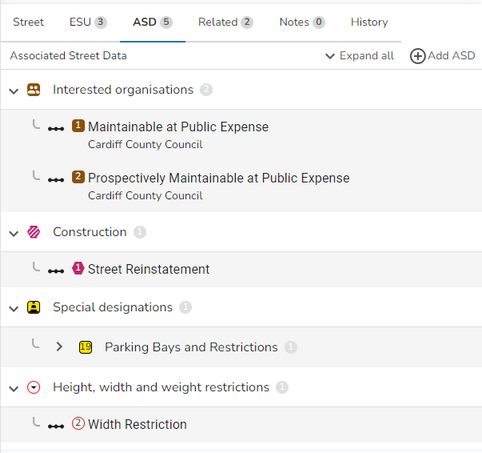
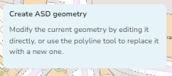
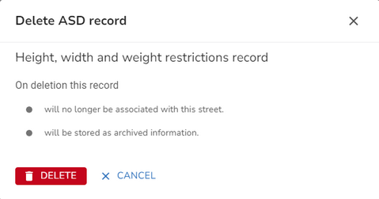

Associated Street Data (ASD) is additional data for a street. First you need to find the street whose ASD you wish to maintain. You can use the Search to search for the street. Once you have found the street, click on it, either in the search results or Explorer to open the Street form where the street details will be displayed.
•Click on the ASD tab and existing ASD is displayed. Note: You can click Expand all to show all of the records or just click on a type to expand that particular type of ASD.

Add ASD
•Select to add ASD from one of the ASD Actions.
•The information for the selected record type is configured with relevant defaults from the ASD template. Note: The Organisation entries will be automatically populated with your authority if there is nothing set in the defaults but you may change this if required.
•Complete the ASD details as required depending upon the type of ASD record you have selected to create. Note: PRoW data may only be created on a Type 3 Street.
•For all ASD record types, apart from PRoW, you have the option to specify if the ASD applies to the Whole road or Part of the road by clicking on the appropriate Applied to button.
•If you pick Part of road you need to specify the location by typing in the Specify location box and then draw a polyline for the ASD.
•Select the Draw a polyline tool from the map toolbar e.g.
•Click on the map for the start of the ASD and click again each time you wish to change direction. Double click to end the polyline. If you wish to change the shape you can simply drag the nodes to a different location.
•When you are happy click OK to validate your entry.
•Click Save to update the street with the ASD
Edit ASD
•Expand the type of ASD record that you wish to edit to display all existing records.
•Select the record you wish to edit.
•Change the ASD details as required.
•Note: If you change your ASD geometry from Whole road to Part of road then you need to either redraw the geometry of the ASD or change the existing geometry. There is a tip displayed top left of the map with details on the options for your ASD geometry e.g.

•When you are happy, click OK to validate your changes.
•Now click Save to update the street with the ASD changes.
Delete ASD
•Select to Delete ASD from one of the ASD Actions.
•You will see a confirmation dialog letting you know what will be deleted if you continue e.g.

•Click  to delete the ASD or click CANCEL to return without deleting.
to delete the ASD or click CANCEL to return without deleting.